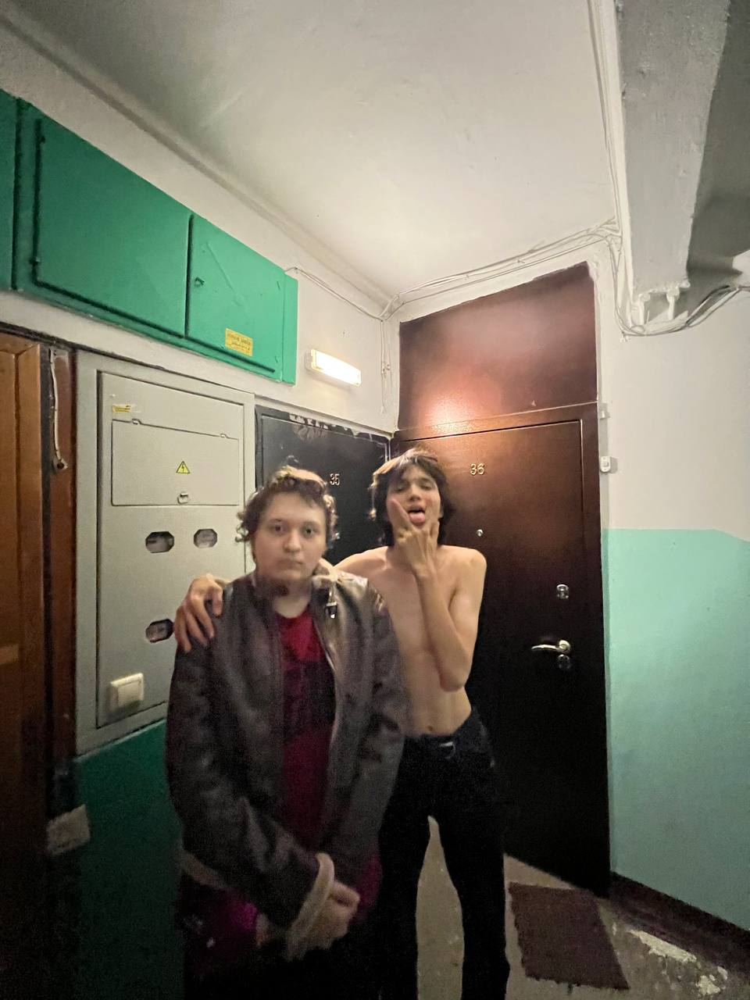
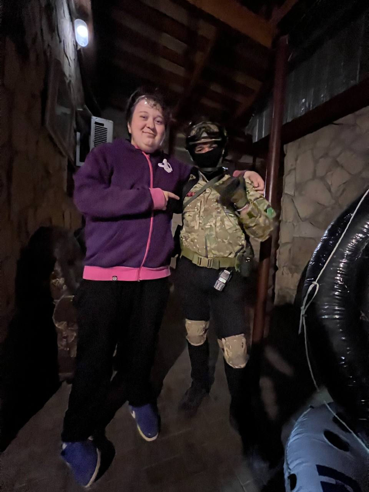
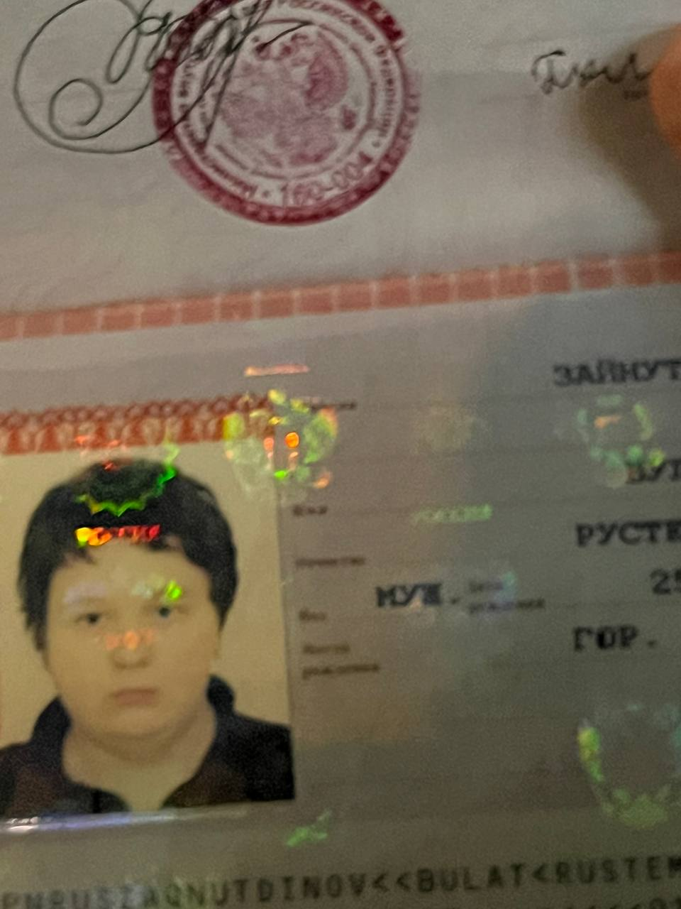

ЖИЗНЬ И ТВОРЧЕСТВО БУЛАТА ЗАЙНУТДИНОВАЧА ))
Однажды в маленькой деревне жила девочка по имени Аделя. Она была сиротой и жила со своим стареньким дедушкой
Исламом. У них не было ничего, кроме старого домика и немного земли, на которой они выращивали небольшой огород.
Аделя и Ислам каждый день тяжело трудились на поле, чтобы иметь хоть какие-то продукты для прокорма. Они
выращивали овощи и фрукты, чтобы хоть немного разнообразить свой рацион. Однако, урожай был всегда маленьким
из-за плохих погодных условий и отсутствия современного сельского оборудования.
Ислам, несмотря на свой преклонный возраст, старался быть сильным и заботливым дедушкой для Адели. Он учил ее
тому малому, что знал сам, и передавал ей свою веру в светлое будущее. Они мечтали о лучшей жизни, о возможности
получить образование и выбраться из этой жалкой бедности.
Однако, их мечты разбивались о реальность. День за днем Аделя и Ислам боролись с голодом и холодом, с тяжелыми
трудовыми условиями. Они жили в постоянном страхе не справиться и остаться без всего.
Но однажды случилось несчастье. Ислам заболел серьезно и не смог продолжать работу на поле. Было очень тяжело
для него справиться с болезнью без должного медицинского обслуживания. Аделя была отчаянной и беспомощной, она
не знала, как помочь своему дедушке.
Они обратились за помощью в местную больницу, но им отказали из-за их нищеты. Без денег и связей, они были
предоставлены сами себе. Аделя плакала каждую ночь, видя, как дедушка мучается от болей и слабости.
Но в самый неподходящий момент произошло чудо. Одна добрая женщина услышала о их бедствии и решила помочь. Она
оплатила лечение дедушки Ислама и снабдила их продуктами питания. Аделя не могла поверить в счастье, которое
наконец-то коснулось их жизни.
С течением времени Ислам поправился, и они смогли вернуться к своей обычной жизни. Но этот опыт оставил глубокий
след в сердце Адели. Она обрела новую силу и решимость бороться за свою мечту.
Аделя стала учиться усердно и выделяться в учебе. Она получила стипендию и возможность поступить в престижный
университет. Она стала успешной профессионалкой и помогала другим людям, которые оказывались в безысходности.
История Адели и Ислама стала не только жалкой, но и историей силы, веры и надежды. Она напоминает нам, что даже
в самых трудных моментах можно найти помощь и поддержку, и что нищета не является пределом возможностей.Ну поддержите емае


